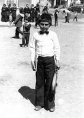

“Karanlıktan Korkmamayı O Gün Öğrendim.”
Çetin Özgür Güvercin19
12 Eylül döneminde Artvin’in Şavşat ilçesinde yaşıyorduk. Tüm Şavşat ailemiz gibiydi bizim, bir bütünlük, birliktelik vardı esasen. Babam Kayhan Güvercin memurdu, annem Nezahat Güvercin ev kadını, ablamsa lise son sınıftaydı. Ben 12-13 yaşlarında bir çocuktum. Artvin’de bir Dev-Yol kültürü vardı. Hepimiz Devrimci-Yol’cuyduk orada. Ne kadar olunabiliyorsa artık... biz çocuktuk. TÜM-DER, memur derneği vardı. Babam onun üyesi olması nedeniyle suçlanırdı, sürekli örgüte üye gibi gösterirlerdi. Ablam Lise-Der’in üyesiydi. Anneme devrimci ağabeyler derlerdi ki, senin kadınlarla ilgili sorumluluğun var. Ee biz de güzel günlerin geleceği düşüyle becerebildiğimiz kadar küçük devrimciler olarak ortalıkta geziyorduk. Babam, Şavşat içerisinde 3 günde bir alınıyor, elleri şiş halde geri geliyordu. 1 hafta 10 gün elleri iyileştikten sonra bir daha alınıyordu içeriye. Daha sonra da açığa alındı. 70 küsur yaşındaki dedem, torpil bularak görüşme gayreti içerisinde olmuştu her zaman.
Orta ikinci sınıftaydım tabii ben o zaman. Tamamıyla bir gözlem esasında bizimki. Yani yaşımız gereği bizim herhangi bir aktivitemiz yoktu ama devrimciler bizim için hem bir hedefti hem de idoldü, modeldi. Çünkü kötü bir şey yapmıyorlardı, onu biliyorduk biz. Kötü bir şey yapsalardı da görürdük. Sokaklar bizimdi esasında. Asker de, ağabeylerimiz de kendilerinin zannediyordu ama biz askeri de görüyorduk, ağabeylerimizi de görüyorduk. Kimin nerede olduğunu biliyorduk.
Ağabeylerimizin haklı olduğunu düşünüyorduk. 12 Eylül sonrasındaki dönemde de insanların dağa çıkma süreci oldu. Benim gördüğüm 12 Eylül sabahı, gece haber alınmış, herkes dağa çıkacaktı. Acaba beni de alırlar mı kaygısı oldu herkeste. O ilk anda ağabeylerimizin bir sürü insanı geri çevirdiğini ben biliyordum. Yani liseli öğrenciler olsun, liseyi yeni bitirmiş 20’li yaşlardaki öğrenciler olsun, özellikle işte Neşe Keskin, Ensar Karahan ve diğerlerinin birçok insanı geri çevirdiğini biliyorum. Çünkü onlar gerçekten bizim gözümüzde hem iyi devrimciydiler hem iyi liderdiler. Ha, dağa çıkıp da ne yapacaklardı, yani macera değil ama belki de gelecek darbeden korktukları için. Biz dağda kendi başımıza oradan bir şey yapabilir miyiz mantığıyla çıktılar ama bugünkü dağa çıkma, yani Güneydoğu’daki dağa çıkma gibi bir şey değil bu.

Çetin Özgür ilkokul gösterisinde
Ben ve yaşıtım arkadaşlar okumak zorundaydık. Arkadaş grubu olarak kendimize öyle bir hedef belirlemiştik. Öyle ya; devrim olduğunda ülkede, halkların mutlu yaşaması için, hizmet verecektik, doktor, avukat hizmet verecekti. O yüzden de biz hep iyi yerlere gelmek zorundaydık. Ağabeylerimizin de çok iyi üniversitelerde okuduğunu biliyoruz o dönemde. Bir gün Erdem Çakır ağabeyim, Ankara’da Hukuk Fakültesi’nde okuyordu, bırakıp Artvin’e geri gelmişti. Annem döve döve geri gönderdi onu. Annemin şu lafını hiç unutmam: “Sen nasıl bırakırsın okulu, bize hâkim lazım, bizim insanımıza avukat lazım, yetenekli ve bu işin eğitimini görmüş insanlar lazım.” Tavır buydu esasında.
Devrimin tanımlamasını bilirdik, kitaplar vardı, onlardan okurduk, bunlarla ilgili kendi çapımızda seminerler verirdik. Devlete karşı duruştan, asker veya polisten ziyade, biz yönetimimizi kendimiz kuralım çabasıydı bu. Hep Fatsa’yı duyardık. Hatta o dönem Şavşat’ta 12 Eylül Şenlikleri olacaktı, ben çocuk korosundaydım aynı zamanda, okuduğumuz türküler vardı, Şavşat türküleri. Şimdi bakıyorum bir marş bile yokmuş içerisinde, “Dağ Başında Değirmeni” söylermişiz işte, “Gelin Hoş Geldin”i söylermişiz. Ağabeylerimiz bize koro görevi verdi, şenlik düzenlenecek” dedi. Ardından 12 Eylül oldu ve tam bir şok yaşandı. Bütün her şey yerle bir oldu bizim için. Üzerinden tank geçti, hem de nasıl geçti, resmen bombalandık, kaldık ortada.
Hiç Haber Almadan Geçen 45 Gün
Babam il dışındaydı. Dedem hasta olduğu için Bursa’ya götürmüştü. Babam geri gelir gelmez içeri alındı zaten. Hatta o zaman gel-gelme derken babam dedi ki, kimsemiz yok, herkes içeride. Memur olduğu için mecbur göreve dönecek. 10 gün falan Şavşat içerisinde kaldı, memur diye bıraktılar. Ondan 15-20 gün sonra ablamı gözaltına aldılar, işte 45 günlük süreç o dönemde yaşandı. Ablamı önce Şavşat’ta lisede Devrimci Yol sempatizanı diye gözaltına aldılar. Daha sonra Artvin’e götürdüler, yaklaşık 45-50 gün Artvin’de kaldı. Bu süre içinde herkese yapılan işkenceler, belki biraz daha azı, ona da yapıldı. Çünkü çıktıktan sonra vücudundaki izleri ve psikolojisindeki bozulmayı görmüştüm. Onu gördüğüm zaman yıkıldığımı hatırlıyorum. Tabii daha sonra diğer ağabeylerimizi, kaybettiklerimizi gördükten sonra zaten çok kötü olmuştuk. Dedem Bursa’dan gelmişti o dönem. Hasta hasta emniyetteki birine hediye götürmeyi bile düşünürdü ki aman vereyim de torunumdan bir haber alayım. İçeriden sadece haber alınırdı, yoksa çok rahat bir şekilde bir görüşme olmazdı zaten. 45. gün bu çalışmaların neticesinde Erzurum’a gönderilmeden ablamı almayı başardık. Ablam Şavşat’a döndü.
Normal bir yaşam vardı ve 12 Eylül’le tamamıyla altüst oldu, şimdi yeni bir yaşam kurmak gerekiyordu. Herkes şuna şahit oldu, benim babamı alıp almamalarından ziyade, komşumuzu da aldılar, karşıdaki amcayı da aldılar, öteki ağabeyi de götürdüler yani kimse yok. Hayalet gibi dolanıyorsun ortalıkta, yani hiçbir şey yapma isteğimiz kalmadı.12 Eylül’ün sabahında 13-15 yaşından yaşlı kimseyi görmedim ben sokakta. Sadece İsmet ağabeyinin fırını vardı, oraya ben yaştakiler giderdi, başka kimse sokağa çıkamazdı çünkü. Çıkanı aldılar. Ellerimizi yana açarak gezmek zorunda kaldık. Çünkü acaba bir yerden bir yere bir şey mi götürüyorlar diye bakarlardı. Ardahan’dan bir dünya asker geldi Artvin’e o dönem. Durdurup, aradıklarını çok iyi biliyorum, elimizde para var, ekmek alacağız çünkü. Kimse bundan farklı bir şey algılamasın istiyoruz. Çünkü korkuyoruz bu sefer gelip evi basacaklar diye. Tabii daha sonra herkesin evi basıldı, arandı. 12 Eylül’den sonra da biz çocuklar, gençler ailemizi geçindirme çabasına girdik.
Kapı Duvar
Bir gün okuldan çıkıp eve geldiğimde şöyle bir manzara ile karşılaştım: ablamı almışlardı, eve geldim ki babamı da almışlar, baktım ki ev kapalı. Karşı tarafta komşumuz Raci amcalar vardı, ona sorduk ne oldu diye. Dedi ki “Oğul bize gel”. Şimdi insanlar hem bize sahip çıkıyorlar hem de tedirginler. Annem yok dedim, dediler ki sen burada kal. Bölge Okulu vardı, sözde ilköğretim okulu olacaktı ama askeriyeye tahsis edildi orası. Annemi almışlar, sebebi de şu; dağa çıkan ağabeylerimizi görmüşler, babam görmüş söylememiş, annem de oradaymış ve bir şey söylememiş. Söylemediği için de almışlar. O dönem özellikle faşistler dediğimiz gruptan çok fazla ihbarcı çıktı. Annem de alınınca ben tabii kaldım ortada. O anda yemek içmekten ziyade nerede kalacağımı düşünüyordum. Çünkü çocuk olduğumdan evimizin anahtarı da yoktu bende. Artı eve girsem de ayrı bir tedirginlik, eve girmek bile istemiyorum, kimse yok nihayetinde. Hani şey derler ya, karanlıktan korkmamayı o gün kendime öğrettim diye, aynen öyle bir durum. Çünkü korkarsam ben üzüleceğim, benim üzüldüğümü diğerleri görüp çok fazla sevinmesin diye düşünüyorum. Kendi başımıza mücadele gibi bir şey. Ama tabii ki onun devamında bizim okumaktan başka çaremizin olmadığını biliyorduk.
Babamı açığa aldılar. Zaten zengin de değiliz, ekmek alacak para lazım bize. Arkadaşlarla oturduk, seminer gibi bir şey yaptık. Dedik ki biz para kazanmalıyız, nasıl kazanalım diye düşündük sonunda ayakkabı boyayalım dedik. Yaklaşık 5-6 arkadaş hepimiz ayrı ayrı bölgelerde ayakkabı boyamaya başladık. Çünkü herkes yan yana olursa az ayakkabı boyayacağız... Aynı yaş grubuyuz. İşte 1-2 yaş büyük, küçük şeklinde. Birkaç arkadaşımızın boya sandığı vardı; fakat benim boya sandığım hiç olmadı. Yaptırabilme gücüm de yok. Bülent Karaosmanoğlu ağabeyimiz vardı. O da yakalanmıştı ve içerideydi. Onun bir boya sandığı olduğunu duymuştum ben. Gittim annesine, Hikmet Teyze’ye, dedim ki ben eve yardım etmek istiyorum, para kazanmam lazım, boya sandığım yok. Hikmet Teyze dedi ki “Oğlum bu Bülent’in sandığıdır, hiç kimseye vermedim şimdiye kadar.” Çocukluğunda kullanmış meğer onu “Ona iyi bak” demişti bana. Sandığa iyi bakacağım ama sandığı taşıyamıyorum, benim boyum 1.40 cm, sandığın uzunluğu da 1.40 cm. Ben de adam tutardım, beraber taşırdık. Boyaları birinden borç bulduk. Mahmut Ocaklı bana 5 lira mı 10 lira mı para vermişti. Bizim oranın meşhur poşa20 fırçasından aldım, bir de boya ve cila aldırdı bana. Kazanır parasını bana ödersin diye, o parayı da hâlâ almamıştır Mahmut Amca benden, sermayesi ondan geldi. Derken ayakkabı boyama işiyle bayağı bir para kazanmaya başladım. Bir gün hiç bilmediğim bir adam, Ziayettin Akbulut, şu anki AKP Konya milletvekili, kaymakamdı bizim orada. Kaymakam geliyor dediler. Tabii ki biz kaymakamın ününü biliyoruz, babamı görevden almış her şeyden önce, geldi benim önümde durdu, kaça boyuyorsunuz ayakkabıyı, ayakkabıyı da 1 liraya, botları 2.5 liraya boyuyoruz. Dedim ki 1 lira. Boyadım ayakkabısını ama bütün maharetimi gösteriyorum, şahsını bilmem ama kaymakam babamı görevden almış, gıcık ama yapacak bir şeyim yok. Kafamda da boyarken diyorum ya para alsam mı almasam mı? Çıkardı bana o zamanın parası 5 lira verdi. Beğendi ayakkabı boyamamı, daha sonra bana şunu söyledi: Pazartesi ve salı günleri 9’da Hükümet Konağı’na geleceksin. Tamam dedim, durumum iyi, bir müşterim garanti. Çünkü 1 lirayla 2 ekmek alabiliyordum o zaman. Çok önemli bir paraydı benim için. Tabii kaymakamın ayakkabısını boyadığımız zaman özel kalem müdürü, mal müdürü, diğerleri de sıraya girdiği için bir kaymakamın ayakkabısını boyama periyodunda belki de 30 lira para kazanıyorum. O zaman da kasamız yok, billur tuz poşetleri vardı, çok kalındı onlar, para kesesi olarak kullanıyorduk. Her gün sayardım paramı, anneme teslim ederdim onları çünkü gerçekten gelirimiz yok, karnımızı doyurmak zorundayız. Neyse bir başka gidişte şimdi babam da görevden alınmış ya bu defa para almayayım dedim kaymakamdan, ayakkabı boyamayla ona bir jest yapmaya gayret ediyorum, nefret etsem bile, belki babama acır da ona bir yardım eder diye. Dedim ki, ben bu defa almayacağım bu defa benden olsun. Öyle deyince kaymakam bir şaşırdı, ne demek istiyorsun, nasıl böyle bir şey düşünürsün dedi. Diğerleri de bana kızdılar, sen kaymakama böyle bir şey nasıl dersin diye. Daha sonra babam içeriden çıktıktan sonra öğrendi benim onun oğlu olduğumu, ayakkabı boyamaya devam ettim ama önceki nezaketi hiç olmadı bana karşı. Sonra da zaten bıraktım. Ama mesela Bülent Karaosmanoğlu’nun sandığını duyan ayakkabısını bana boyatmaya geliyordu. Bu benim için çok önemliydi. Hatta Bülent ağabeye bir mektup yazmıştım, sandıktan dolayı, “Ağabey senin sandığını gururla taşıyorum” mealinde bir mektup. Mektup gitmiş, Bülent ağabey okumuş, tabii bana cevap yazma gibi bir şansı yok. Bu mektubun gittiğini duyunca babamı tekrar görevden aldılar. Çetin bu adama bu mektubu nasıl yazdı diye. Ben çocukça teşekkür mahiyetinde yazmıştım oysa ki. Tabii cevap gelmeyince Neşe Abla’ya da bir mektup yazdım, onların içeride görüşebileceklerini sanıyordum. Ona yazınca bu sefer de annemi içeri aldılar, dediler ki senin oğlun içeriye mektup yazıyor. Ben art niyetli bir şey yazmıyorum halbuki, nasılsın diye soruyorum, Bülent ağabeye teşekkür ettim ama bana yazmadı, görürsen selamımı söyle diyorum. Böyle bir maceramız vardı yani. Şimdi anlatınca inanılmaz gibi geliyor ama böyleydi.
Babamın periyodik tutukluluklarından birinde annem de hasta, bel fıtığından ameliyat olmuştu ve çok da kötüydü. Eve geldim, dedi ki “Oğul babanı içeri aldılar gidip bir bakalım nerede olduğuna”. Kiralar ucuz diye yokuş bir yere taşınmışız. Biz yokuşun aşağısında oturuyoruz, yukarıda Hükümet Konağı’nın olduğu yerde bir karakol var. Annemle yokuşu tırmanıp karakola gittik. Babamı soruyoruz. 4-5 saat bizi orada beklettiler, annem de hasta zaten. Elinde de bir bastonu vardı, kırmızı bir baston, hatta kırmızı bastonlu kadın derlerdi o zaman çevrede görenler. Sonunda bize dediler ki burada yok. Meğer babam oradaymış esasında ama biz çok sonra öğrendik. Nerede diye sorduk, Bölge Okulu’nda, askeriyede olur oraya gidin dediler. Daha sonra babam çıktıktan sonra bize “Ben sizin sesinizi içeriden duyuyordum” dedi. Çünkü prefabrik bir yapıydı, bir hücre oluşturmuşlar orada duruyor meğer babam. Biz annemle beraber döndük tekrar yürüyoruz ama tabii ki rahatsızlığından dolayı çok sağlıklı yürüyemiyor, ayağının bir tarafı çekiyor. Sürekli hızlı bir şekilde yürüyoruz. Orada ayağı takıldı ve annem uzun uzadıya yere düştü, yığıldı resmen. Avuçlarının içi, dizleri ve dirsekleri tamamıyla kanamaya başladı. Bu ayrı bir yıkım oldu benim için. Babamı arıyoruz, annemi kaybedeceğim, o kadar kötü. 500-600 metre bir mesafe kaldı aşağıdaki karakola, annem kalktı, benim gözümden yaş akacak ama annem görsün istemiyorum. Anne şurada duralım dedim, “Yok oğlum!” dedi “direkt yürüyelim. Bizi bu halde görüp de bizden dolayı sevinmesinler.” Çünkü orada birkaç tane o dönemde hani ihbarcı, muhbir veya faşizan tavırlar sergileyen esnaf grubu vardı. Annem onlar öyle görsün istemiyordu. Tekrar oradan yürüdük, annemin yine değneği elinde, baston diyelim ona, gittik aşağıdaki karakola, kapıya geçtik dedik ki biz Kayhan Güvercin’in oğlu ve eşiyiz. Annemin elindeki baston kırma tüfekleri temizlemek için ucuna bir şey takılır ya işte o parça. O tüfekleri de elimizden aldılar o dönem, topladılar bütün silahları, atadan dededen kalmaları da. Orada subay kılıklı birisi çıktı, “Bu nedir” dedi. Annem de benim bastonum dedi. Hayır dedi bu silah temizlemek için kullanılır, bu da suçtur. Bunun üzerine annemi de aldı içeriye, her tarafı yara, bere, kan içinde. Ben yine kaldım. O da çok acı bir durumdur. Çünkü biz babamı kurtarmaya çalışırken annem de alındı. Daha sonra akşam bir saatte annemi bıraktılar. Babamın orada da olmadığını öğrendik, tekrar yukarıya çıktık. En sonunda burada dediler, içeriden babamı bir gösterdiler uzaktan. Bir hafta sonra babam geldi ki onun da elleri yine tamamıyla şişmiş. Bu süreç bu şekilde devam etti.
Devrimci Avı...
Devrimci ağabeylerimiz darbenin ardından dağa çıktılar. Dağ derken köylerimizin üst tarafı. Dağ mantığını farklı algılarlar insanlar ama biliyoruz ki o dağlar bizim evimiz zaten. Yaşadığımız yerin bir parçası, köyün üst tarafları. Belki de diğer insanlar bilmiyorlar ama köyün üzerinde bizim yolumuzun geçtiği yerler ama asker veya polis bilemez oraları. Böyle çok gizli kapaklı yerlerimiz de değil, mağaralar veyahut sığınaklar da çok nadir. Benim çok sevdiğim ve bildiğim, Ensar ağabey vardı, Fahamettin Aksakal, İbrahim Aydın vardı, Temurhan ağabey vardı, Ethem Kara vardı, Neşe Abla vardı. Bunlar dağdaydılar, biz hep şey düşünüyorduk o dönemde, dağın başında bir duman gördük mü, ha bak çay demliyorlardır, derdik çocukça düşüncelerle. Tabii ki devrimin gelmesini hepimiz istiyorduk ama ağabeylerimiz ne getirirse bizim için doğrudur mantığındaydık. 12 Eylül’den sonra dedik ki, devrimin mevrimin olacağı yok, kimse devrimi yapamaz ama bizim ağabeylerimiz orada, bir umut var. Onlar yukarıdalar ya biraz daha rahat yürüyoruz, kendi mücadelemizi sürdürüyoruz sözde. Bir gün haber geldi, dediler ki Veliköy’ün girişindeki bir tepede bir çatışma var. Sonra Ensar ağabeylerin yakalandığı haberi geldi, biz “mahvolduk o zaman” dedik kendi kendimize. Çünkü bizim ağabeylerimiz bu işi gerçekleştirecekler, biz mutlu yaşayacağız derdik, onun derdindeyiz ya çok kötü olduk. Arkadaşlarla toplandık ilçe merkezinde bir yerde, bekliyoruz. Derdimiz de şu; ölen var mı? Daha önce bir Erkan ağabey vardı, onun öldüğünü duymuştuk, görmüştük zaten. Dediler ki ölen yok ama yakalanmış geliyorlar. 8’den 14 yaşına kadar bir çocuk grubu. Büyüklerin zaten gelme gibi bir durumu yok. Çünkü kimse evinden ayrılamıyor, alıyorlar içeriye. Şavşat’ın altından, önde Ensar ağabey, arkasında Fahamettin Aksakal, sanırım Neşe Abla vardı, onun da arkasında İbrahim ağabey –ayağı kırılmıştı o olayda– getirildiklerini gördük. Ellerinden ve ayaklarından zincire vurulmuş bir şekilde çeke çeke getiriyorlardı askerler. İnsanlık dışı bir şekilde yürüte yürüte Şavşat içerisine getiriyorlar ve herkese laf atıyorlar “gördünüz mü bakın işte” şeklinde. Kimseden tabii ses çıkmıyor. Biz de yandan yandan takip ediyoruz. Neyse karakolun önüne getirdiler. Arkadaşlarla dedik ki biz karakolun önüne gidelim. Çünkü bizde de şöyle bir avantaj var: Biz küçüğüz ya bunlar bizi vurmazlar, bize bir şey yapmayacaklar düşüncesindeyiz. Bir de hep sevdiğimiz ağabeylerimiz orada ama bizden başka kimse yok, o dönemin biz yaştaki çocuklarına sorun hepsi aynı şeyi anlatacaklardır. Orada duruyoruz biz, hepsiyle göz göze geliyoruz. Bize teşhir ediyorlar onları “Bakın sizin ağabey dediğiniz sizi kurtaracak adamlar burada, haydi kurtarsınlar da görelim.” Ensar ağabeye hatta dönüp laf ediyor “Haydi kurtar!” falan diye. Ensar ağabey onların gözüne ok gibi bakıyor, bizim gözümüze sevecen bakıyor. Tabii o bize ayrı bir duygu yoğunluğu veriyor gördük diye. Askerler bir sürü laf ediyor bize orada. “Gördünüz mü sizin lider dediğiniz adamların halini.” Bu arada dedik ki durumdan etkilenmemeliyiz, ağlamayalım. Çünkü onlar çok kötü haldeler, onlar da bizim gözümüze o kadar sevecen bakıyorlar ki esasen sevinçten de ağlayacağız gördüğümüz için ama yakalanmaları zorumuza gitmiş, ağlamak yok, kararımız o. Çünkü ağlarsak ağabeylerimiz üzülecekti. O arada yüzbaşı Mustafa Eken ve bir astsubay vardı, bizimle dalga geçiyordu. Mustafa, Neşe Abla’nın kardeşi, yandan “Ensar ağabey nasılsın ne yapıyorsun” diye sormasın mı? Aaa bütün çocuklar “Neşe Abla sen nasılsın, Fahamettin ağabey sen nasılsın, İbrahim ağabey sen nasılsın?” diye sormaya başladılar. Komutanların aldığı hal var ya... Esasında biz o gün bir eylem yapmış gibi hissettik kendimizi. Evet biz çocuk halimizle, duvarı yıkan, buzu kıran bir yol bulmuştuk, onlara hiç değilse nasılsın diye sorabilmiştik. Hepimiz çocuğuz ve babalarımızın birçoğu yok zaten ama biz böyle bir cesaretle toplandık. 20 kişi birbirimize, çocuk cesareti midir nedir? Ama sevdiğimiz insanları o halde yalnız bırakmayalım dedik. Çünkü bizim o ana kadar yaşayageldiğimiz ayrı bir kültürdü Artvin’de. Hani derler ya din indi insanlara diye, Devrimci Yol da böyle bir iniştir, yazılmamış bir yaşam kuralı, örgütlü yaşam kuralı, duruş biçimi bizim için. O dönem öyle algılanıyordu. Çünkü ağabeylerimiz öyle durdular bize karşı. Ben hiç kötü bir şey görmedim onlardan. Ve her zaman sorarlardı çocuk karnın aç mıdır, evden ekmek alayım ye derlerdi. Böyle olduğu zaman bizim için o idoldür, bizim için modeldir.
Darbeden Sonra
12 Eylül’den sonra tayinler yaptılar, yeni öğretmenler geldi. 12 Eylül öncesinde solcu öğretmenlerimiz vardı, birden okul sağcı öğretmenlerle doldu, %60-70’i değişti.
Hatta biz “Bu muhbirmiş!” demeye de başladık. İsmini hatırlayamayacağım şimdi, resim öğretmeni vardı. Babam 50 çocuğun velisiydi. Çünkü ben zaten okumak zorundaydım ama köydeki çocukların velisiydi babam. Her gün okuldaydı. O resim öğretmeni de ağabey ağabey diye peşinden gezerdi babamın ama 12 Eylül’den sonra ilk sopayı ondan yedim ben. Şaşırdım, bu adam beni niye dövdü diye. Öncesinde hiç öyle bir şey yoktu. Ben zaten orta birden lise sona kadar hep sınıf başkanıydım. O da bir başarı hedefi gibiydi. Çünkü çok başarılı bir öğrenci olmasam bile sorumluluğum olmalıydı diye düşünüyorum. Orta ikinci sınıfta durumum çok iyiydi. Mesela Fransızcam benim 10 üzerinden 10’du. Çok iyi bir öğretmenim vardı, çok da severdim kendisini ama orta üçüncü sınıfta bu öğretmenimi de aldılar, gönderdiler. Başka biri geldi, lise birde Fransızcam 1, resmen psikolojik baskı var. Biyoloji öğretmenim Recep Pirim’le ilgili öyle bir anım var benim. Lise birinci sınıfta ders başında yoklama yapıyorsun, tahtaya olmayanı yazıyorsun, bir de yaramazlık yapanları sağ köşeye yazıyorsun. Ben hiç yazmazdım arkadaşlarımı. Her geldiği derste beni döverdi. Babamın ve ablamın siyasi duruşunu da öğrenmişti. Her geldiği derste önce bana iki tane tokat atardı, bu sınıftan niye ses geliyor diye ama çıt çıkmazdı aslında sınıftan. Arkadaşlar da, her derste beni dövdüğü için üzülürlerdi ya, hani bir şey yapamıyoruz diye. “Sınıftan çok ses çıkıyor, kimden çıktı, ben tahmin edeyim” derdi, birisini çağırırdı, o da belli, Dağıstan Altun; onu da döverdi ha bire. Bir günahı olmadan sürekli sopa yerdi. Sonra bir gün akşamüzeri, hava karardı. Bir tane floresan yanmış, girdi içeriye, çağırdı. İki tane yine vurdu. Böyle duruyoruz ama ben ağlayıp sızlamamaya da gayret ediyorum. Çünkü ciddi anlamda sıkıntı. “Ne oldu bu floresana?” “Öğretmenim yanmış”. “Yanmamıştır o” dedi. “Sizin komünist ağabeyleriniz, vatan haini ağabeyleriniz yurtsever milliyetçi öğretmenlerimizin kafasında kırmıştır” dedi. Dedim ki “Bir öğretmenin dövüldüğünü hatırlamıyorum”. Çıkarttırdı floresanı oradan, geldi bizim yanımızda yerlere vurdu, sonra tekrar beni dövmeye başladı. Kendi kendime diyorum ki yapacak bir şey yok ama buna yalvarmamalıyım ben. Bana “Seni başkanlıktan atıyorum, yeni seçim olacak” dedi, yeni başkanlık seçiminde bütün sınıf yine bana oy verdi. Atamayla da yapamadı. Öyle garip bir durum oldu. Daha sonra başka bir derste yine bahane bulamıyor, dövecek ama bahane bulamıyor. “Sınavda siz kopya çektiniz” dedi bize. Çekmedik dedik. O yüzden ben hücrenin yapısını iyi bilirim, endoplasmik retikulumdur, stoplazmadır, lanet olsun ona. Çocuğun birisi, kim yazdı onu da bilmiyoruz. Notlar yazmış, bunlar da yerde. Biz üçlü oturuyoruz orada. Hep de başarılı öğrencileriz esasında, 7-8-9 alacak seviyedeyiz. Geldi birden, eğildi baktı, bu 3 sıra çıksın dedi bize sınavda. Bıraktık sınavımızı. Başkan yardımcısı bir kız vardı. Siyasi duruş olarak değil de öğretmenlerle iyi geçiniyordu. Ona dedi ki aşağıdan bir tane yarmaça al dedi. Yarmaça deriz biz Şavşat’ta, iki elle zor tutarsın o odunları. Bizi sıraya dizdi. Dövmeye başladı ama biz ellerimizi yana doğru açıyoruz, bu elimize vuruyor anında kızarıyor, elimizi arkaya götürüyoruz, tahtayı elliyoruz elimizin üstü kan oluyor. Biz dayanıyoruz, yapacak bir şeyimiz yok ama kopyayı biz çekmemişiz, sen çektin diyor bana, ben çekmedim, diyorum. Açıyoruz elimizi bir daha vuruyor zaten bir arkadaşımızın eli çatladı, bir tanesinin de çatlak olan eli kırıldı o darbede. Şimdi önde kız arkadaşlarımız ağlıyor. Yalnız ben ellerimi ayaklarımın bile arasına sokmaya utanıyorum. Çünkü çok sağlam durmalıyım. Arkadaşlarım ağlıyor, diyorum ki ağlamayın sakın. Bunu görünce bana bir daha vurmaya başladı. Bu sefer tabii kötü. Dedi ki öğleden sonra kopya çekeni bulur, floresanı getirirseniz sizi affedeceğim. Tabii Şavşat’ta bunu duyan herkes geldi, seven sevmeyen herkes. Babam geldi ve dedi ki alıyoruz çocukları okuldan. Diğer öğretmenler falan karşı çıktılar ama tabii o çok kötü bir olaydı. Bir bozuk floresan için bize yapılanlar o kadar zorumuza gitmişti ki. Çünkü o floresan bizim için kıymetliydi kimse de kimsenin kafasına vurmadı, vurmazdı da zaten; yok, olmayan floresanı hangi öğretmenin kafasında hangi ağabeyimiz kırsın. Şavşat’ta yoktu, Artvin’den gelirdi floresan.
Askerlerin babalarımıza yaptığı işkencenin farklı bir örneğini biz okulda bu tür öğretmenlerden görüyorduk. O yaşta bir genç için inanılmaz bir travma. Bu acıyı yaşattılar bize, ciddi psikolojik baskıydı bu ama yine de okumak zorundaydık. Ki o dönemde bizim sınıf mevcudumuz 52 kişiydi, 52 kişi bir sınıfta okurduk, üçerli dörderli otururduk sıralara. Sanırım 45’i üniversiteyi kazandı. Şimdi çok iyi yerlerde arkadaşlarımız var ama çok büyük acıydı. O zaman şunu derdim “Ya arkadaş bu halimiz nedir, ağabeylerimiz içeri alındı, biz kaldık. Niye hak ettik bunları?” diye çok düşünmüşümdür yani. Bugün olsa aynı duruşu sergiler miyim, belki daha fazlasını sergilerim. Çünkü çok adice bir tavırdı onlarınki. Yani Artvin’in okuma yazma oranı %98’lerle, Tunceli ile yarışır diye bilirdik. Şimdilerde %40-50’lere düşmesinin sebebi de budur veya işte 60. sıraya gerilememizin sebebi de o tür öğretmenlerin o dönem oraya gönderilip bizi ve bizden sonrakileri bu şekilde harcamalarıdır.
Darbenin ardından Kenan Evren’in Şavşat’a geleceğini duyduk. Biz dedik ki ne yapabiliriz, hiçbir şey yapamayız ama biz tabii nefret etmişiz ya bu adamdan. İhtilal olmasından ziyade, Kenan Evren’in Şavşat’a gelmesi de bize zor geliyor çocuk halimizle. Bu adam buraya gelmese keşke diyoruz. Helikopteri ilk defa göreceğiz. Yapacak hiçbir şeyimiz yok. Elimizde olsa sokmayız onu ama gücün yok. Öğrencileri de hazırladılar, herkes oraya gidecek. Biz dedik ki, bizi okuldan atsalar da oraya gitmeyeceğiz. Karşılama töreni yapılacak, bayraklar sallanıyor ya, milli bayram gibi addediyorlar. Bizim ilçede Şartül tarafında bir orman deposu var, onun alanı müsait, helikopter oraya inecek. O alana kadar yol toprak, o alandan sonra tuttular asfalt attılar 2 gün içerisinde. Memlekete hizmet diye, ilk asfaltı da o zaman gördü Şavşat.
Kenan Evren Artvin’e, resmen düşürülen bir kaleye, komutan edasında geldi, tam bir fethetme edasıyla. Bu karşılamaya katılmadığım için de bir sürü sopa yedim öğretmenlerden. İşin garibi Kenan Evren ertesi gün gelecek dediler. Ben eve gittim ki evde yine kimse yok. Karşı komşuya gidiyorum, bu sefer onu da almışlar. Yine yedi sülaleyi toplamışlar. Sadece benimkileri değil, 60 yaşında annelerimizi de almışlar, dedelerimizi de almışlar. Şavşat’ın içerisinde belli aileleri, tepki gösterebileceğini düşündükleri herkesi almışlar. Biz de, o anlamda renk vermiyoruz. Kenan Evren gelecek törene katılacak mısınız diyorlar biz de tabii diyoruz ama ekibimiz sağlam, kesinlikle gidilmeyecek. Yani eli silah tutanı askere götürürlermiş ya yürüyecek güçtekileri alıp götürmüşler. Bölge Okulu’nun içerisinde spor salonu vardı. Hatta burada bizim top oynamamıza müsade etmezlerdi, sadece kaymakamlık turnuvası olurdu. O turnuvaya katılırdık, ona da mecbur katılırdık ama hep jandarmayla final oynardık biz ve yenerdik. Orada da öyle bir anımız var bizim yine. Bu sefer gittik ki herkesi orada toplamışlar. Annemin babası, dedem de benimle geldi. Askerlere niye bu insanları içeri aldınız diye sorduk. “Kenan Evren geliyor, bunlar onu vurabilir!” gibi bir yanıt verdi. Dedem de “Vurabilirler, bunlardan her şey beklenir!” diye tepki gösterdi. Hem şaşırmış hem sinirlenmiştim. Biz annemleri almaya çalışıyoruz, dedem de gerekmediği halde devletçi bir tavır sergiliyor. Annem çok kızmıştı dedeme.
Psikolojik Destek
Şimdi düşünebiliyor musunuz yani 12 Eylül’ü yaşayanlar adamakıllı yaşadılar, ağabeylerimiz, ablalarımız, kocası içeri alınanlar, çocuklarına bakarken acılar çekti ama bildiler ki sebebi budur. Şimdi biz ne yaşadığımızı da bilemedik yani tam ortada kalmışız, arada kalmış nesil olarak devam ettik. O dönemde nasıl bir psikoloji ile kendine sahip çıkacaksın, çıkamıyorsun. Lise dönemini bitirip hemen çıktık işte Artvin’den. Üniversite hayatından sonra Ankara’da kaldık ama her yıl Şavşat’a giderim. Her yıl aynı ilişkileri, çocukluğumda yaşadığım şeyleri düşünürüm.
O dönemde zaten herkes psikolojik olarak hasta gibiydi. Esasında arkadaşlar birbirimize destek verdik. İnsanların da ne olduğu belli değilmiş, iyiydi diyenler de oldu, bizim kapımızı açmayanlar da oldu. Sonraki dönemlerde açmak istedilerse de bu sefer de biz açmadık o kapıyı onlara. Çünkü o da ayrı bir duruştu bizim için. En dar zamanımızda yanımızda olmadılar, yani benim ayağımda ayakkabı yoktu. Ayakkabımda delik var, kışın onunla geziyorum. Özellikle sulu kara basmamaya dikkat ediyorum. Özgen ağabeyin botları varmış, o botları tutmuş Orhan ağabeye vermiş. O giymiş bir sene. Onun ayakları büyüyünce tutmuş bunu Midayet Amca’nın küçük oğlu Tanju’ya vermiş, o giyiyor. Beşinci sene ayakkabıyı giyme sırası bana geliyor. Şahsenem Teyze, anneme törenle verdi. O günü hiç unutmuyorum, o çok acı bir durumdur. Artık biz devrimci kültür şunu bunu da geçmişiz donuyor ayağımız soğuktan. O botların bana gelişi, benim o botları ilk giyişimi hiç unutmuyorum. Benden sonra da, şimdi rahmetli oldu, Murat vardı, ona verdim botları. Yani öyle bir yaşam biçimi vardı.
Benim montum olmamıştı. Bir mont almışlardı o dönemde, herkes fakir. Benim takipçim de Murat’tı. Çünkü herkes beni hedeflerdi, büyüme sırasını da hesap etmiştik orada. Murat dedi ki bak iki sene sonra bu mont benimdir ha. Çünkü yok durumu ve ilk defa montum olmuş benim. İşte Murat için o montu iki sene sonra almak umut veriyordu. Psikolojik destek de sanırım bunlar gibi bir şey oluyordu. O sıkıntıları yaşıyorduk.
12 Eylül Davası
Ben 12 Eylül 2010’daki Anayasa Referandumu’nda hayır verenlerdenim ve bunun için ciddi anlamda gidip köyünde çalışanlardanım. Bizim köyümüz, Şavşat Köprülü köyü de %90 oranında hayır verdi referandumda. Bazı evetçi gruplar ve hayırcı grupların tepki koyduklarını görüyorum. Ben de 4 Nisan’da adliyenin önündeydim. Yaşadıklarımı da bildiğim için, bir Kenan Evren’in, hani Erdal Eren’in yaşını büyütüp astı ben de şey dedim ne kadar gerekiyorsa o kadar küçültüp ben de onu asayım. Hukuk açısından ne gerçekleşecek, hiçbir şey olmayacaktır. Bu davanın sonucunda da bir şeyin çıkacağını ben düşünmüyorum ama “çok güzel” dediğim bir şey gördüm ben orada. O gün orada her şeyden önce şu vardı: hani 12 Eylül öncesinde vatan haini dedikleri, Allahsız, dinsiz, kitapsız dedikleri insanlar oradaydı. Gelip de görseydiler, basın da oradaydı. Benim için orada bir devrim vardı. İşin Türkçesi. O insanların birbirine sarılması... Hatta şunu dedim yani, buluşma sempozyumu, söyleşi, aynen onun gibi bir şeydi. İnsanlar bir araya geldiler. Biz Artvin grubundan orada herhalde bin kişi kadardık. Mahkeme sonucunda 500-600 tane müdahil olma dilekçesi verildi ki katiller bile dilekçe verdiler. Yani yaşasa belki Muhsin Yazıcıoğlu bile dilekçe verebilirdi, düşünün.
O davanın açılması gerektiğinin, o müdahilliğin olması gerektiğinin altına imzamı atarım. Bir şey çıkar mı, hiçbir şey çıkmaz zaten. Sonuçta o iki kişiyi assanız ne olacak. O da bir dönemin imzasıdır bana sorarsanız, bir şey çıkmayacaktır ama çıksa bile yine kendi içinde sulandırılarak çıkacaktır ama 4 Nisan orada doğru bir duruştu. Her ne kadar kendi içlerinde 78’liler, Devrimci 78’liler diye ayrımlar olsa dahi çok doğru bir duruş olduğunu düşünüyorum onun.